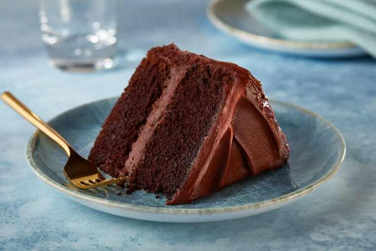

The words “perfect” and “chocolate cake” basically have the same meaning, right? With
HERSHEY’S homemade chocolate cake this seems to be true. Baking from scratch is easier than you think when
you mix HERSHEY’S cocoa with a few other simple ingredients. Bake this delicious dessert when you’re hosting
the next family get-together, celebrating a birthday or wanting a bite of delicious chocolate cake after
dinner. This “perfectly chocolate” cake was made for sharing, so get out your best plates, have a pitcher of
milk ready and divvy out this chocolatey cake with your favorite people.

Ingredients
Instructions
Heat oven to 350°F. Grease and flour two 9-inch round baking pans.
Stir together sugar, flour, cocoa, baking powder, baking soda and salt in large bowl. Add eggs,
milk, oil and vanilla; beat on medium speed of mixer 2 minutes. Stir in boiling water (batter will
be thin). Pour batter into prepared pans.
Thicken filling: Spoon out about ½ cup of the juice from the pan into a bowl. Stir
cornstarch into the juice until smooth.
Bake 30 to 35 minutes or until wooden pick inserted in center comes out clean. Cool 10 minutes;
remove from pans to wire racks. Cool completely. Frost with "Perfectly Chocolate" Chocolate
Frosting.